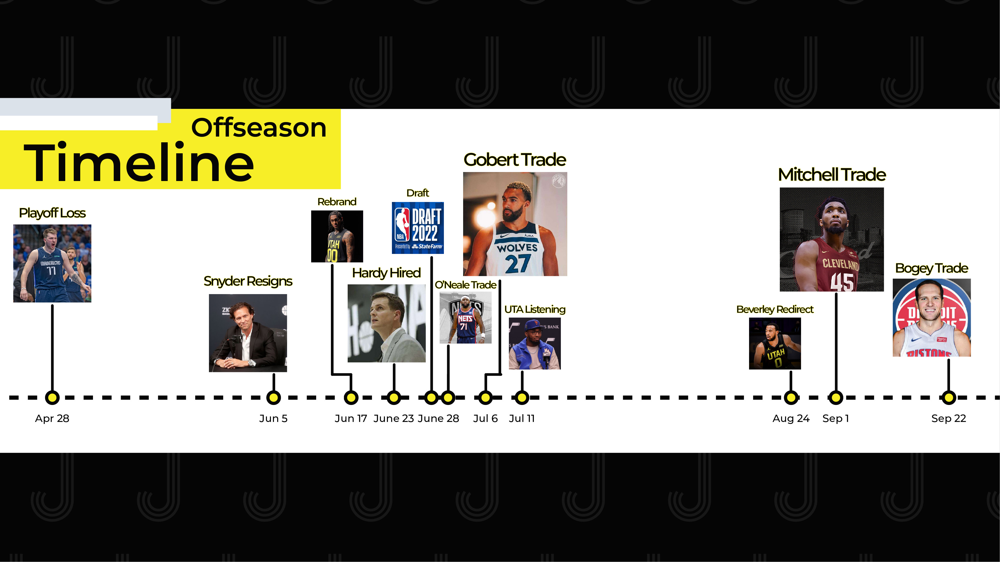

The season is here! James and I get you ready as we count down the hours to Utah Jazz basketball once more. We dive into roster construction, rotation wrinkles, percolating story lines, and settle on some predictions.
Intro
Welcome to Jabber Jazz | Fan-driven, Ad-free content on Utah Jazz basketball
Adam Bushman Twitter | @adam_bushman
Today:
- Training camp check-in
- Buy, sell, or hold on reports from camp
- Offseason in review
- With the context we have now, what do we make of it all?
Like what we’re doing? Consider…
- Subscribing
- Following
- Leaving a review or comment
- Snagging some merch
Training camp check-in
Training camp, media day, preseason, etc.
Everyone is at their apex of health, confidence, performance, vibes, etc.
Just like new job: everything is rosey
What do we BUY, SELL, HOLD??
- Jazz are playing to win every game - From Tony Jones, Will Hardy, Justin Zanik - Buy…coaching staff, players
- Most players just aren’t going to not do their best - Sell…front office
- They need info, vets and youngins
- Upon more info, I think they pick a direction
Brian Windhorst on The Bill Simmons Pod: “I keep laughing out loud every time Danny Ainge or Justin Zanik, two people I respect, are acting like ‘Oh, we’re not tanking. We’re still gonna try and compete’. Almost nothing that the Jazz have said publicly for 4 or 5 months has actually been true. ‘We’re going to build around Donovan’, ‘We don’t need to trade Bogdanovic before camp’, ‘We’ve got good veterans, we’re going to try and win these games’. Don’t judge their words, judge their actions.”
- Vets will play - Buy
- Jazz traded one vet (Bogey) for another vet (Olynyk) to better compliment the roster
- Balance and the right ecosystem for development is what’s being considered
- Bad examples: PHI, SAC
- Malik is shooting the heck out of the ball - Buy
- 38% shooter last 1,000 attempts
- 38% - 41% Catch and Shoot
- 36% - 38% Pullup
- Sexton playing both ends (O and D) every night - Sexton, Hardy comments - Sell
- Jazz aren’t going to sub him out for every defensive possession so “technically” he’ll play
- Selling on him being a contributor/average defensively
- Energy and vibe around team - Tony Jones, Sexton, Clarkson - Buy!
- Hardy and Sexton big drivers
- Clarkson and Conley accentuating new culture
- We’re seeing it in every video/photo
- Sarah Todd’s article: worst vibes last year
- Kessler “leaps and bounds ahead” - Conley via Todd’s article - Buy
- Very cerebral
- Super impressed by his logic and preparation
Offseason in review
Timeline of moves!

- Playoff loss to Mavs: April 28th * The way the team went out * Same old same old
- Quin Snyder Resigns: June 5th * Lost his voice * Too burdensome; year off
- Rebrand Unveiled: June 17th * New era * Past and future
- NBA Draft: June 23rd * Weren’t deals to better the team * Know Agbaji was high on their board
- Will Hardy Hired: June 28th * Blew them away in the interview * Philosophy, maturity * Relationship motivated
- Royce O’Neale Trade: June 30th * Flexibility * Cashing in
- Rudy Gobert Trade: July 6th * Out of now where * Gotta accept that deal
- Jazz Listening on Mitchell: July 11th * Mitchell blindsided by Quin, team direction * “Wanted to run it back” * Looked forward to future in NYK
- Utah Signs Fontecchio: July 17th * Jazz radar for years * One of the more exciting international guys
- Utah Re-trades Beverley: August 24th * Opportunities
- Donovan Mitchell Trade: September 1st * Opportunities, flexibility, future
- Bojan Bogdanovic Trade: September 22nd * Prioritized veterans to supplement and optimize a development future
What do we make of everything with perfect hindsight?
- Team was cooked and EVERYONE knew it
- Ainge comments, Mitchell, Clarkson, Conley, Gay
- Flexibility, options, and a future was highly prioritized
- Utah couldn’t get in draft
- Liked Agbaji; no way to get him
- O’Neale trade
- Chance at a reboot
- Span of 3 weeks Jazz decided on Hardy, knew the draft was a bust, traded Gobert and O’Neale, and begun listening on Mitchell
- Realized quick there was an opportunity to restock our future, preserve a present, and reestablish culture
- Mitchell was a bigger problem than we even thought
- From a culture and future standpoint, it was trending down
- Continually hear more and more
- Love Don, appreciate the good times, but it was time and Jazz had the guts
- Jazz were never really IN on a full out, unabashed tank
- Jazz got current, good assets
- Prioritized getting vets for a proper development ecosystem
- Jazz are throwing a mountain of spaghetti at the wall to see what sticks
Close
Thanks for listening!
Like what we’re doing? Here’s how you can support
- Subscribe
- Leave a review
- Score some Jabber Jazz merch